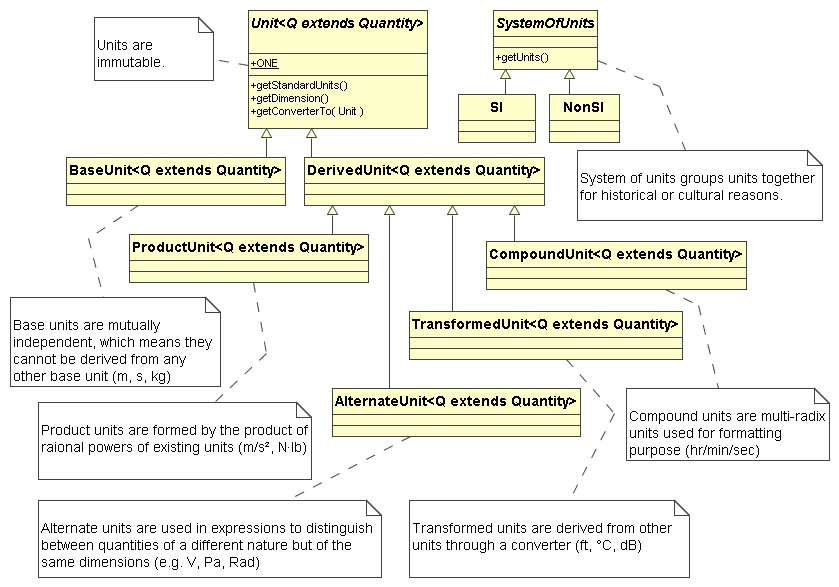

Provides support for programatic unit handling.
Standard/NonStandard Units
Standard units and prefixes are provided by the
{@link xpertss.measure.unit.SI SI} class (Système International d'Unités) and
about 50 non-standard units are available through the
{@link xpertss.measure.unit.NonSI NonSI},
{@link xpertss.measure.unit.Imperial Imperial},
{@link xpertss.measure.unit.Troy Troy} classes.
Unit Parameterization
Units are parameterized (<Q extends {@link xpertss.measure.quantity.Quantity Quantity}>) to
enforce compile-time checks of units/measures consistency, for example:
Unit
<Time> MINUTE = SECONDS.times(60); // Ok.
Unit
<Time> MINUTE = METRE.times(60); // Compile error.
Unit
<Pressure> HECTOPASCAL = HECTO(PASCAL); // Ok.
Unit
<Pressure> HECTOPASCAL = HECTO(NEWTON); // Compile error.
Measurable
<Time> duration = Measure.valueOf(2, MINUTE); // Ok.
Measurable
<Time> duration = Measure.valueOf(2, CELSIUS); // Compile error.
long milliseconds = duration.longValue(MILLI(SECOND)); // Ok.
long milliseconds = duration.longValue(POUND); // Compile error.
UML Diagram
